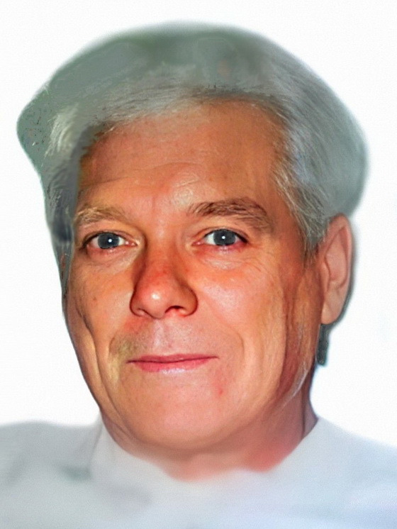

Иван Фомич Бобков

Родился 15 мая 1926 г. в д. Самохвалово (также Самофалово) Кромскóго уезда Орловской губернии и был младшим из по меньшей мере четырёх сыновей в семье. По национальности русский.
Свою мать, Анну Герасимовну, Иван совсем не помнил, поскольку она умерла очень рано, вскоре после его рождения. Воспитала Ивана мачеха, которую, по некоторой информации, звали Анастасией Илларионовной. Кроме родных братьев, у него были ещё сводные брат и сестра.
С будущей женой, Матрёной Орловой, Иван познакомился во время войны. Случилось так, что её семью немцы вывели из родного села и погнали на запад. Когда же Орловы прохо-дили вблизи дома семьи Бобковых, те на время разместили их у себя. В тот момент будущим супругам было по 15 лет.
Но затем их дороги на время разошлись. В конечном счёте Ивана призвали в ряды Красной армии. Правда, произошло это не ранее апреля 1945 г., и в реальных военных действиях он, к счастью, не участвовал. Однако на военной службе он всё же пробыл вплоть до 1950 г. Всё это время Иван, однако, не забывал о встрече с Матрёной и сразу по возвращении домой написал ей письмо с предложением руки и сердца. Она к тому моменту уже жила в Донбассе. В том же году они поженились и стали жить в коммунальной квартире в г. Енакиево. Иван устроился на работу в кислородно-конвертерный цех Енакиевского металлургического завода. В 1951 г. у пары родился сын Виктор, а в 1957 г., когда семья получила от завода новый дом в посёлке 40-летия Октября (позже пос. Ватутина), родился сын Анатолий. В этом доме Иван Фомич прожил до конца своей жизни.
После выхода на пенсию Иван Фомич продолжал трудиться: был сторожем на швейной фабрике; вместе со сватом, Иваном Мартынцом, трудился плотником на предприятии для заключённых; работал на свиноферме. За свои заслуги на производстве Иван Фомич был награждён Орденом Трудового Красного Знамени.
В течение всего 1994 г. на попечении Ивана и Матрёны находилась внучка Анна, так как её родители находились на заработках в Москве. Затем они забрали её к себе, и с тех пор Анна приезжала в Енакиево только на лето. В течение 1990-х гг. Иван Фомич не раз приезжал к сыну Анатолию в Москву на заработки.
Умер Иван Фомич 16 сентября 2000 г. в возрасте 74 лет в Енакиеве от рака гортани. Там же и похоронен. На одном участке с ним похоронена его тёща, Мария Дмитриевна.